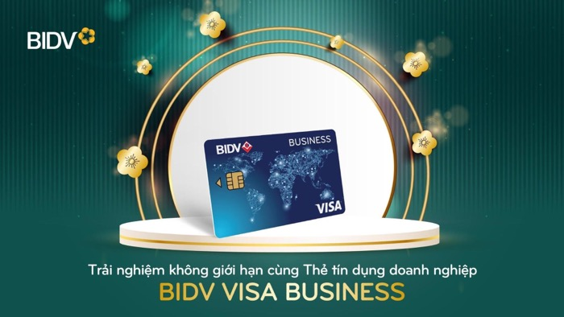

Thẻ tín dụng là phương tiện thanh toán, công cụ quản lý tài chính của cả cá nhân và doanh nghiệp. Xem ngay thông tin chi tiết để hiểu rõ về sản phẩm này nhé. Trong thời đại công nghệ số, thẻ tín dụng không chỉ là phương tiện thanh toán, công cụ quản lý tài chính của cá nhân mà còn là nhu cầu của nhiều doanh nghiệp. Để đáp ứng nhu cầu của thị trường, nhiều ngân hàng đã mạnh dạn đưa ra thị trường sản phẩm thẻ tín dụng doanh nghiệp nhằm mang tới cho nhóm khách hàng này một giải pháp thanh toán và quản lý chi tiêu toàn diện, chủ động, an toàn và minh bạch.
Thẻ tín dụng doanh nghiệp là một loại thẻ tín dụng được ngân hàng phát hành dành cho doanh nghiệp. Theo đó, ngân hàng sẽ cấp cho doanh nghiệp một hạn mức tín dụng thẻ nằm trong hạn mức tín dụng ngắn hạn của doanh nghiệp hoặc dựa trên giá trị tài sản bảo đảm của doanh nghiệp. Căn cứ trên hạn mức tín dụng thẻ được cấp, doanh nghiệp sẽ ủy quyền cho một số cá nhân sử dụng thẻ vào các mục đích chi tiêu hoạt động của doanh nghiệp. Mỗi cá nhân được ủy quyền sẽ đứng tên trên một thẻ phụ liên kết với hạn mức tín dụng thẻ của doanh nghiệp và chi tiêu trong phạm vi hạn mức được doanh nghiệp quy định.
Phát hành thẻ tín dụng doanh nghiệp là một hình thức cấp tín dụng cho doanh nghiệp; tuy nhiên, so với hình thức vay và giải ngân bằng tiền mặt hoặc chuyển khoản, doanh nghiệp cần xuất trình hồ sơ giải ngân hoặc hồ sơ tạm ứng thì sử dụng thẻ tín dụng doanh nghiệp chủ động hơn rất nhiều. Mỗi lần quẹt thẻ là một lần giải ngân mà không cần xuất trình chứng từ với ngân hàng. Việc sử dụng thẻ tín dụng doanh nghiệp sẽ giúp doanh nghiệp thuận tiện, dễ dàng hơn trong việc thanh toán các lĩnh vực đòi hỏi thủ tục kế toán phức tạp như thanh toán chi phí quảng cáo online, vé máy bay – taxi… Đặc biệt nếu chủ động tính toán được thời điểm giao dịch và thời điểm trả nợ, doanh nghiệp còn có thể tận dụng được nguồn vốn tín dụng của ngân hàng với thời gian miễn lãi tối đa đến 45 ngày.
Tùy từng ngân hàng mà điều kiện mở thẻ tín dụng cho doanh nghiệp sẽ khác nhau. Thông thường, để đảm bảo cạnh tranh, các ngân hàng không công khai các điều kiện cụ thể. Tuy nhiên do bản chất thẻ tín dụng doanh nghiệp là cấp tín dụng cho doanh nghiệp thông qua thẻ nên về cơ bản cũng sẽ tuân thủ các điều kiện về cấp tín dụng cho doanh nghiệp, ví dụ như: